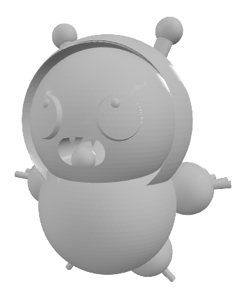
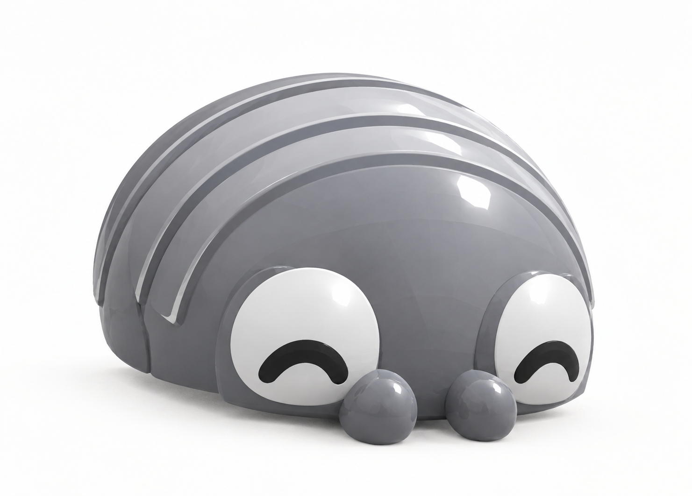
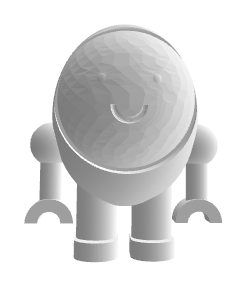
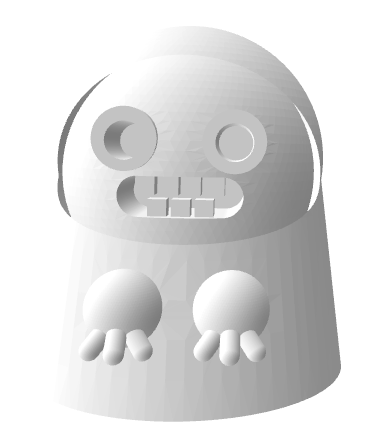

キャラクター名鑑
（なかまたち）

Mocapy（モカピー）
登録番号： No.001
種族： 妖精（フェアリー）
コーヒーの湯気から生まれた、カフェやデスクに出現する小さな温かい妖精です。 デスクワークで疲れた人のそばにそっと寄り添い、日常に小さな癒やしを届けます。

Lad-B（レドビー）
登録番号： No.002
種族： 虫（インセクト）
「モカピー」の頭や背中に捕まって周りの様子を観察している。モカピーの危険を瞬時に察知し、モカピーにそれを伝達する頼もしい相棒。

Dangoloron（ダンゴロロン）
登録番号： No.003
種族： 虫（インセクト）
「モカピーの背中が特等席！どこへでも一緒についていく、小さなちいさな冒険家。必殺技：ダンゴロロンアタック

Capuchi（カプッチ）
登録番号： No.004
種族： 妖精（フェアリー）
カップ・カプセル・ハード・コート（防御力抜群の身体）。卵型ボディにだらりん両腕。ポツンと佇む、モカピー・ワールド一のマヌケな癒やし系。

Sugar Sugaro（シュガー・シュガロ）
登録番号： No.005
種族： 妖精（フェアリー）
お砂糖をじっと見つめる謎のスーツ。リニアのごとく滑らかにスライドする高速マスコット！
妖精たちのエピソード
第1話：☕ カフェモカの香りと、ちいさな出会い
ある日の午後、温かいカフェの片隅。 モカピーは、ディスプレイ用の古いコーヒーミルの陰で、丸くなって気持ちよそうに居眠りをしていました。 そこへ、一人のお客さんが、いれたての「カフェモカ」が入ったマグカップを
...📝第2話：💻 カタカタ動く手元と、甘いおこぼれ
カフェの窓際で、ノートPCを広げて真剣な面持ちで仕事をしているビジネスパーソン。 キーボードを叩く「カタカタカタ……」という小気味よい音が響く中、いつの間にかPCの画面のすぐ横に、モカピーがちょこんと
...📝第3話：🍩 マグカップはライバル？ 常連客への甘えかた
カフェには、ときどきモカピーが「この人は特別！」と認めている常連のお客さんがやってきます。 モカピーは甘いドーナツが大好きですが、それと同じくらい、優しい常連客のことも大好きなのです。 常連客が席に座ると、
...📝第4話：🍩 【大集結】作戦名：ミッション・イン・ドーナツ！窓際席の四重奏
それは、2人の20代の女性客がカフェにやってきた、ある昼下がりのこと。 彼女たちは窓際のテーブル席を選ぶと、お互いのカバンをポンと椅子に置いて席をキープし、注文へと向かいました。 その瞬間、椅子の影で、
...📝第5話：☕ 【優しさと償い】小さな妖精の、不器用で必死な恩返し
それは、少し肌寒い日の午後のこと。 モカピーはすっかり寝ぼけてしまい、頭をフラフラさせながらカフェのフロアをふわふわと漂っていました。 ちょうどその時、淹れたてのカフェオレをトレーに乗せて、席へ向かおうと
...📝第6話：🥴 【大失態】作戦名：リキュールの罠と、千鳥足の甘噛みパニック
モカピーは基本的にカフェが大好きですが、ときどき夜風にあたりに近くの公園へ散歩に出かけるなど、狭い範囲を気ままにうろうろする習性があります。 ある日の夜、公園からカフェに戻ろうとしたモカピーは、寝ぼけて
...📝